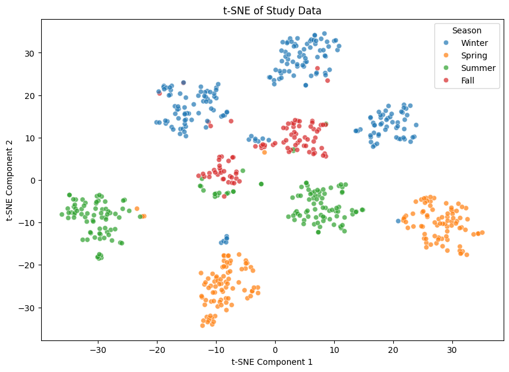
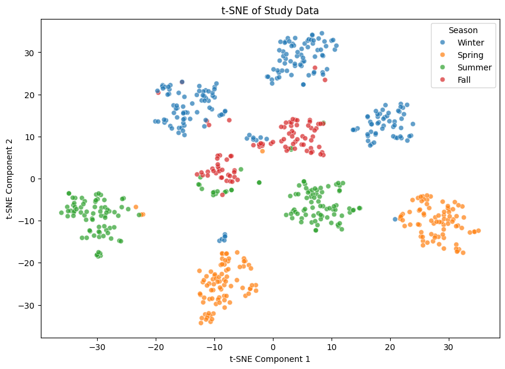

Conducting explorative analysis on the numerical data. Mainly focuses on looking at changes in study habits reflected in study times. All the EDA notebooks are attached in here.
Temporal Analysis:¶
From the first plot, we are looking at some overall temporal trend and how my study hours flunctuate in different week days, different quarters, and different years. Looks like study time overall increases since Freshman. I have my demo notebook provided here.
The monthly pattern in the second plot is consistent for each year where summer time has significantly less work loads and th erest flunctuates about the same.


We can also look at some specific categories of what I do, specifcally speaking (research, dsc, math, and cogs). There seems to be some category specific trend, spending much moretimes on both research stuff and data science stuff.

We can also examine how study hours changes as a function of week-days and week-number examine seperately by each year.
- Seems to be the busiest around week 30.
- Seems to be usually busy aorund Tuesday and Wednesday and chilling on the weekend.

At last, let's look at each season's effect on study times by using a heatmap. We can see that there is an overall increase in study time over the years and the longest cumulative study time seems to be at Fall and Spring quarter (busiest quarters).
Dimensionality Reductions¶
Using some dimensionality reduction technique, we can show some underlaying property of the numerical data belong to each quarter. Specifcally, we can show thatthere seems to exist different study habits, causing different clusters of data.
 

Categorical Course Analysis¶
Created an overall statistics of how each course varies on time usage, having details relative to each classes.